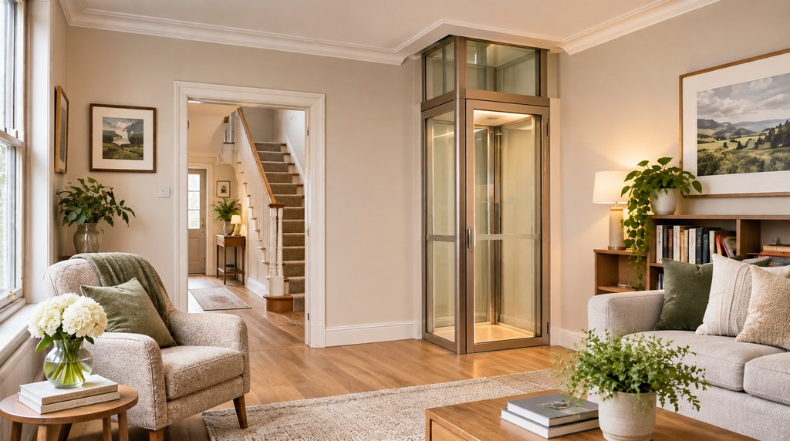
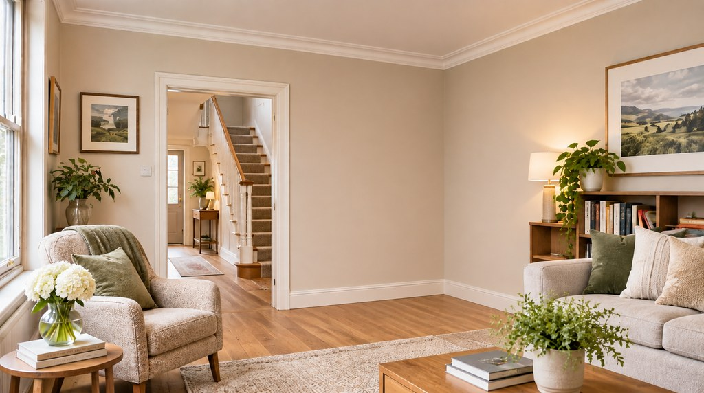

A mews rebuilt around a lift
When its owners rebuilt a two-storey mews as a three-storey home, they added a circular lift from the ground to the top floor, to future-proof it.
Reported by The Irish Times, February 2023.
What are you looking for?


Illustrative AI-generated visualisation. Not an actual installation.
What if the home you love could grow with you?
A home lift can be a quiet piece of design: the stairs stay, and every floor stays yours.
Illustrative AI-generated visualisation. Not an actual installation.
The opportunity
The neighbours you know. The view from the bedroom window. The kitchen where the family still gathers. Most of us would rather shape a home around how we live than leave it.
A home lift is one way to do that. Fitted well, it sits in a living room, a hall or the space beside the stairs, and it simply makes moving between floors a choice rather than a climb.
The question
Most Irish houses put the bedrooms and the bathroom upstairs. That works for years, and it’s worth thinking about early, while every option is still open.
The possibility
Home lifts range from a compact car that rises through a neat opening in the ceiling to a glass lift designed to be seen. Sometimes the right answer isn’t a lift at all.
The same questions for each: space, the floor opening, building work, power, installation, upkeep and wheelchair use. Points marked Maker claim are what manufacturers say about their own products; we haven’t independently tested them.
A small car travels between two floors through an opening cut in the ceiling. When it’s upstairs, the room below is clear again.
A cabin that travels inside its own enclosure or a built shaft, like a small passenger lift.
A lift chosen to be seen: glazed walls, slim framing, part of the interior rather than hidden from it.
Where a lift doesn’t suit the house, or isn’t needed, these are often the better answer.
Illustrative drawings by PlotNua, not to scale and not designs for any house. Which approach suits a home depends on its layout, structure and the people who live there.
What exists today
Home lifts are made, sold and installed on the island of Ireland, and Ireland’s housing adaptation grants name through-floor lifts among the works they can fund. Some owners plan for one long before they need it.
When its owners rebuilt a two-storey mews as a three-storey home, they added a circular lift from the ground to the top floor, to future-proof it.
Reported by The Irish Times, February 2023.
When a new storey was added to a house first bought as a home for a parent, the owner had space left for a lift, in case the house later became a retirement home.
Reported by The Irish Times.
Two new three-storey-over-basement houses were laid out around a lift: the lift, their creator said, inspired the layout.
Reported by The Irish Times.
Planning for a lift doesn’t mean fitting one now. It can be as simple as leaving the right space when you renovate.
Homes are described from published property coverage, checked on 4 November 2026. No photographs of them are shown, and nothing here suggests any connection with PlotNua.
The practicalities
Not every home can take a lift, and the right one depends on the house. What the rules require is kept apart from practical guidance.
A survey of your house comes first. These are the questions it should answer.
What the rules require
Planning, structure, fire safety, electrics and product safety, each with its source below.
Works that affect only the interior of a house are generally exempted development. That doesn’t apply automatically to a protected structure, and a lift shaft on the outside of a house, or anything that changes how it looks, needs its own planning assessment. A Section 5 declaration from your local authority can give a formal answer.
Cutting an opening through a floor means altering the joists that carry it. Have it designed by a structural engineer, or the installer’s engineer, and keep the paperwork with the house.
Building Regulations apply to material alterations to a house. Fire-safety guidance for houses expects openings in fire-separating construction to be protected, and, where a floor is more than 4.5 metres above ground, usually expects the stairs to be a protected escape route. How a lift opening is handled depends on the house: ask a competent professional to design and confirm it.
Where the lift needs a new circuit or other electrical work, use a Registered Electrical Contractor and get the completion certificate.
Most home lifts travel slowly enough to be covered by EU machinery law, with a harmonised safety standard for lifting platforms (EN 81-41). Ask for the lift’s EU declaration of conformity. From 20 January 2027 the new EU Machinery Regulation applies to new machinery placed on the market.
Council grants can help with a stairlift or a through-floor lift where it’s needed by an older or disabled person. They are means-tested, and a grant must be approved before any work begins. Details are below.
Grant figures are from gov.ie and local authority pages, checked on 4 November 2026. Eligibility is decided by your local authority; check its current rules before you plan any work.
Practical guidance
Questions for you and your installer. The answers vary with every house.
A lift needs a place where it arrives somewhere useful on both floors: often a corner of a living room below a bedroom or landing, a hall, or the void beside a turning staircase. Pipes, wiring and joists in the floor above all shape where it can go.
Check the platform size against any wheelchair or walking aid actually in use, how the doors open at each floor, and the controls. Where a grant is involved, an occupational therapist’s assessment helps match the lift to the person.
Expect a survey, then the builder’s work for the opening and any electrics, then the lift itself and the making good of ceilings and floors. Ask who is responsible for each part, and who certifies it.
A lift needs regular servicing for as long as it’s in use. Ask how often, what it costs, how quickly a breakdown is answered, what the warranty covers and what happens in a power cut.
Tell your home insurer before the work starts, and check how your policy treats the lift and the alterations.
We haven’t found published, itemised Irish prices for an installed home lift.
What Irish installers do publish are starting prices. Treat them as a first sense of scale, not a quote for your home.
Advertised figure
€11,000 to €19,000
A typical starting price for a home lift, as advertised by an Irish installer of home lifts (Stairlifts Access Lifts, accesslifts.ie). The page is undated; PlotNua checked it on 4 November 2026. It is not a quote, and it doesn’t say what is included: structural work, installation and VAT may all change the cost, and larger enclosed and glass lifts are typically priced higher.
Last checked 4 November 2026. PlotNua is an independent discovery platform and does not recommend or endorse any provider mentioned; no provider named here is a PlotNua partner. Statements marked “Maker claim” summarise what manufacturers publish about their own products. The room images on this page are AI-generated illustrations, not photographs of an actual installation; the comparison drawings are simplified PlotNua illustrations.
The homeowner decision
Your next step
Explore the possibilities yourself
Compare the four ways up, read the practicalities and the grants, and take our questions to any installer you talk to.
Let PlotNua do the homework
Start a free conversation with PlotNua. Tell us about your home and we’ll help you investigate the options, using what PlotNua has researched.
Free for homeowners.
PlotNua doesn’t sell or install lifts, and can’t confirm that a house is suitable or that a grant will be approved; that needs a survey and your local authority. Nothing is booked by starting a conversation.
Whoever you talk to, these questions help you compare like with like.